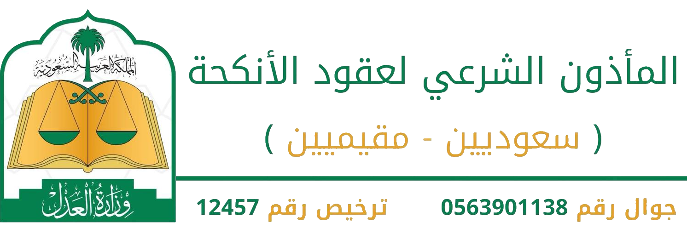

فائز القرشي مأذون رسمي معتمد من وزارة العدل، متوفر لدية عقود الزواج
الإلكترونية أو الورقية حسب مايناسب الاطراف، بارك الله في أفراحكم.
تتيح للزوجين تقديم طلب عقد الزواج إلكترونيًا، باتباع الخطوات الرسمية
التالية:
1) تسجيل الدخول بحساب النفاذ الوطني.
2) إدخال البيانات المطلوبة مثل بيانات الزوجين والولي والشهود.
3) تقديم الطلب ليتم مراجعته من الجهات المختصة.
4) إرسال الطلب إلى المأذون الشرعي لإتمام التوثيق وإصدار وثيقة عقد
الزواج.
بعد تقديم الطلب، تواصل مع الشيخ أبو عبدالملك لإتمام العقد وتوثيقه
رسميًا:
في حال رغبتك بإجراء عقد الزواج بالطريقة الورقية، يمكنك التواصل مع الشيخ
مباشرة لتحديد الموعد والقيام بالإجراءات حسب الأنظمة المعتمدة.
لحجز موعد لعقد زواج ورقي:
لضمان إتمام عقد النكاح بسلاسة، يُرجى التأكد من توفر المتطلبات التالية:
1. الهوية الوطنية:
حضور الزوج والزوجة وولي المرأة مع أصل الهوية الوطنية أو دفتر العائلة.
2. الشهود:
إحضار شاهدين عارفين بالمرأة ووليها، مع إثبات الهوية الوطنية لكل شاهد.
3. التقرير الطبي لما قبل الزواج:
يجب إجراء الفحص الطبي في أحد المراكز المعتمدة.
4. موافقة الزوجة:
التأكد من رضا الزوجة وموافقتها، ويتم سؤالها شخصيًا من قبل المأذون
الشرعي.
5. وثائق إضافية (عند الحاجة):
صك الطلاق إن كانت المرأة مطلقة.
صك حصر الورثة إذا كان وليها متوفيًا.
توثيق عقود الأنكحة بسرعة وكفاءة.
إجراء عقد الزواج وفق الضوابط الشرعية.
تسهيل معاملات الزواج بكل يسر.
يخدم الشيخ أغلب مناطق المملكة بالتنسيق المسبق، ويتم تحديد الموعد حسب
المدينة
لا يتم تقديم خدمات تعارف أو زواج مسيار أو أي نوع من أنواع الزواج غير
الرسمي.
التواصل مع المأذون مباشرتا